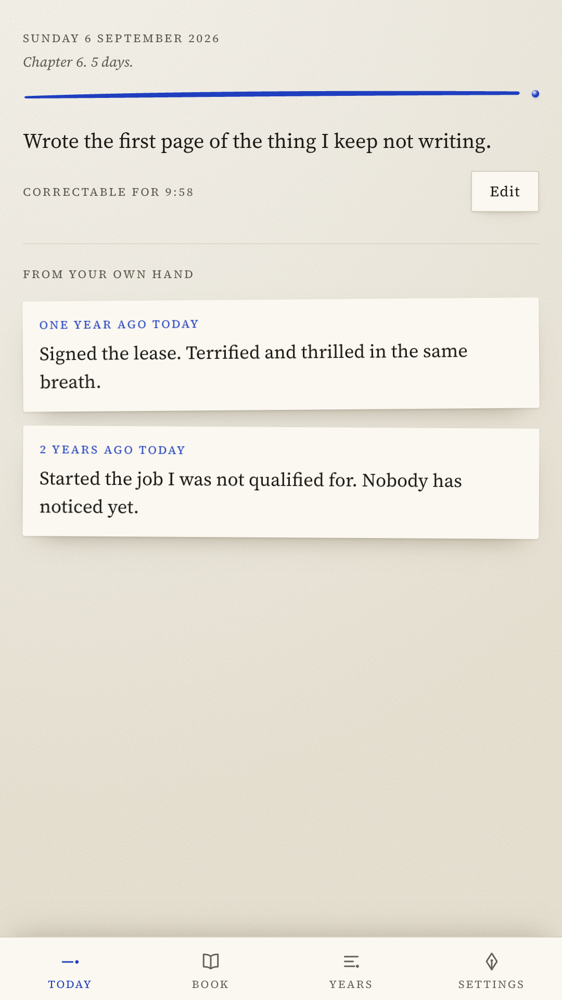
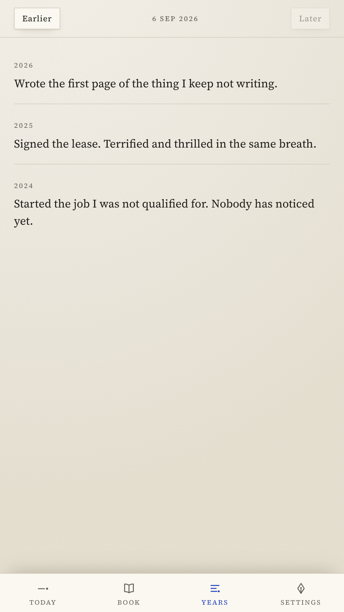
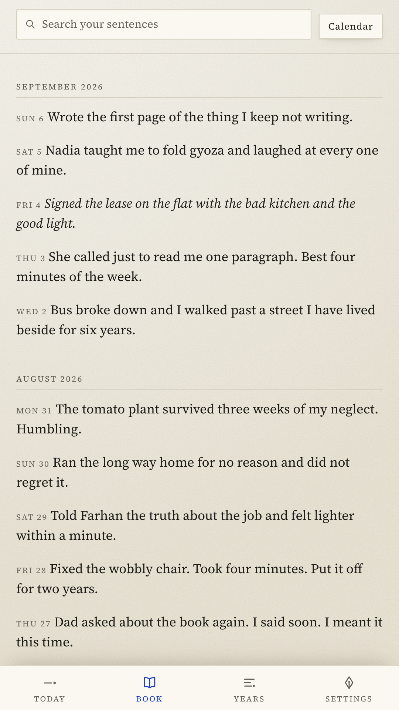
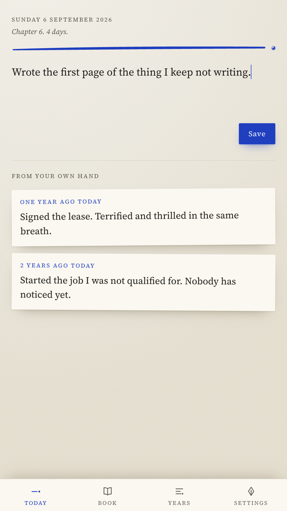

Write one sentence about today. Tomorrow you cannot change it. In a year, your mornings get interesting.
Get it on Google Play
One sentence. That is the whole app.
Not the free tier, not the starter plan. Two hundred and eighty characters, once a day, and then you are done for eleven seconds of work. You cannot fall behind on a sentence.
Every morning the app hands you what you wrote on this date in previous years. The notification is not a reminder to write. It is the sentence itself, from you, a year ago.



A flame counter, a broken chain, a red badge, and a push notification implying you have let yourself down. It works for about nine days, and then the app becomes a thing you avoid opening.
Unbroken runs are quietly numbered as chapters. Miss a week and a new chapter simply begins, the way books do. Missed days are drawn as unprinted paper, not as failure. Nobody grieves starting a chapter.
The app does not request the internet permission. It cannot send your sentences anywhere, because Android will not let it open a connection at all. You can check that on the Play listing.
There is no sign-up, no email, no cloud, and no analytics. Nothing about you is collected, because there is nowhere for it to go.
Export the whole book as plain text, CSV or JSON whenever you want, and import it back. Any sentence can be saved as a typeset card. A journal that holds your memories hostage is a horror story.
The app is free and complete. A product about permanence should not bill you monthly.
This app gets good in a year. We are patient.
Get it on Google Play